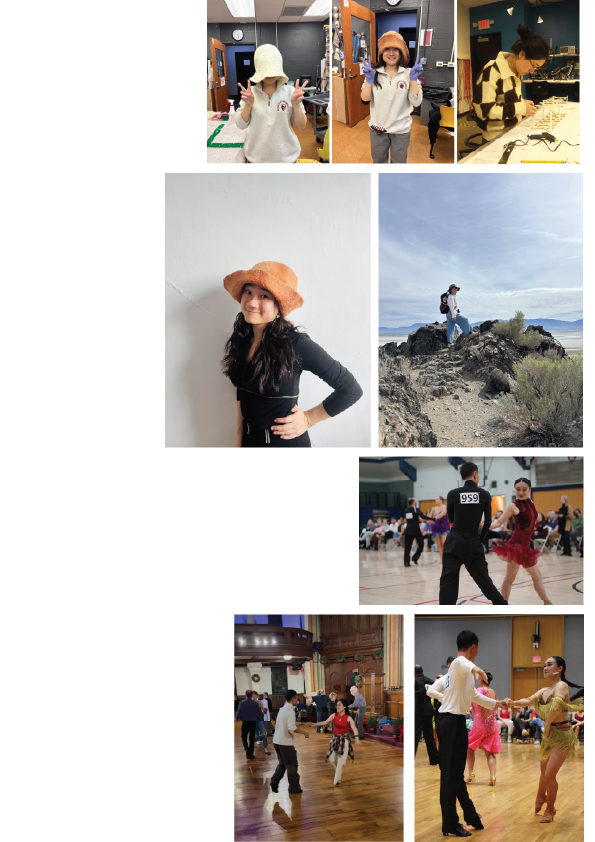

About Me
I tend to go deep into the things I care about and keep refining them over time. Once something genuinely interests me, I stay with it—practicing consistently and improving step by step. That long-term commitment has shaped many parts of my life. It’s reflected both in my work in the ecological field and in how I approach my interests outside of it.
I have practiced ballroom dance for more than ten years and still train regularly. I now compete at the open level. Beyond that, I’m drawn to making things that can be physically experienced. Compared to purely virtual work, I prefer creating objects that can be touched, worn, or interacted with in the real world. I enjoy translating ideas into tangible design through projects like making little electronic devices, sewing my own clothes, making hats or experimenting with other creative work. I also like spending time outdoors—hiking, visiting new places, or simply walking through the city.
I like to explore life with intention—choosing what to commit to and refining it over time. The deeper I go, the more meaning and enjoyment I find.
Email:
yeyed@andrew.cmu.edu
Social:
LinkedIn
